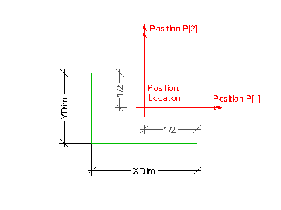

 |
Position
The parameterized profile defines its own position coordinate system.
The underlying
coordinate system is defined by the swept surface or swept area solid
that uses the profile definition. It is the xy plane of either:
- IfcSweptSurface.Position
- IfcSweptAreaSolid.Position
or in case of sectioned spines the xy plane of each list member of IfcSectionedSpine.CrossSectionPositions.
By using offsets of the position location, the parameterized profile
can be positioned centric (using x,y offsets = 0.), or at any position
relative to the profile. Explicit coordinate offsets are used to define
cardinal points (for example, upper-left bound).
Parameter
The IfcRectangleProfileDef
is defined within the position
coordinate system, where the XDim
defines the length measure
for the length of the rectangle (half along the positive x-axis) and
the YDim
defines the length measure for the width of the
rectangle (half along the positive y-axis).
|
 EXPRESS-G diagram
EXPRESS-G diagram Link to this page
Link to this page